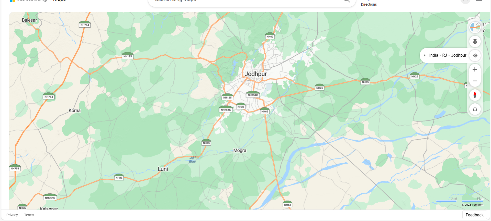

{% load static %}
<!DOCTYPE html>
<html>
<head>
    <title>Map</title>

    <!-- Internal CSS -->
    <style>
         h1{text-align: center;color:rgb(42, 138, 165);}
        img{
            display: block;
            margin-left:auto;
            margin-right:auto;
            width: 700px;
            height:250;
            border-radius: 20px;
        }
        body {
            margin: 0;
            padding: 0;
            font-family: Arial, sans-serif;
            text-align: center;
        }

        h2 {
            color: red;
            font-weight: bold;
            margin-top: 20px;
        }

        h3 {
            color: blue;
            font-weight: bold;
            margin-top: 5px;
            margin-bottom: 20px;
        }

        img {
            max-width: 100%;
            height: auto;
        }

        /* Optional: add a border around the image map */
        .map-container {
            display: inline-block;
            border: 2px solid #000;
            padding: 5px;
        }
    </style>
</head>
<body>

    <h2>Jodhpur</h2>

    <h3>Himadri (25011498)</h3>

    <div class="map-container">
        
    </div>

    <map name="image-map">

        <!-- Rectangle -->
        <area alt="food" 
              title="Jodhpur Food"
              href="jodhpur.html"
              shape="rect" 
              coords="944,253,1064,318">

        <!-- Circle -->
        <area alt="Mogra"
              title="Mogra"
              href="mogra.html"
              shape="circle" 
              coords="940,587,40">

        <!-- Circle -->
        <area alt="Luni"
              title="Luni Fort"
              href="luni.html"
              shape="circle" 
              coords="648,653,50">

        <!-- Polygon -->
        <area alt="Korna"
              title="Korna"
              href="korna.html"
              shape="poly" 
              coords="640,665,288,431,300,600,500,700">

    </map>

</body>
</html>